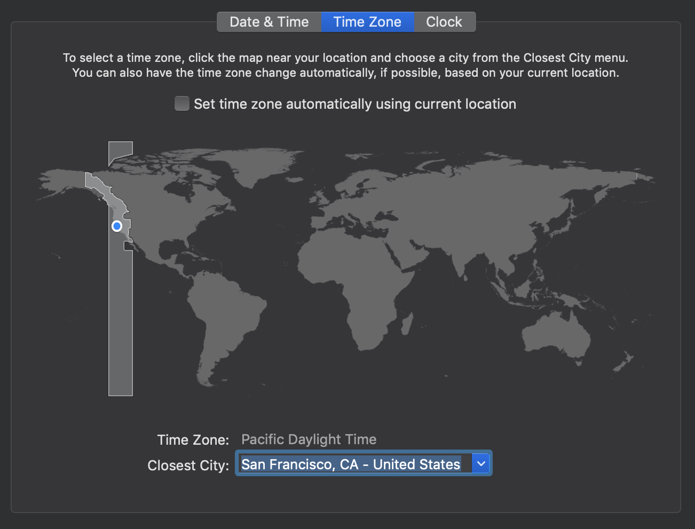
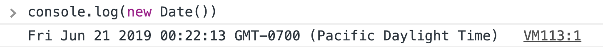
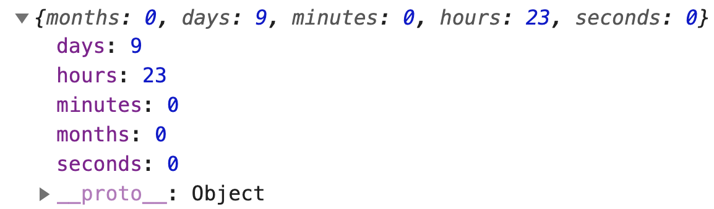

When DST is observed, the time is called Summer Time
When DST is not observed, the time is called Normal Time or Winter Time
When does DST begin?
Different places enter DST at different times of the year. Most enter DST at the end of March, and they exit DST at the end of October. You can check when a place enters/exits DST here.
For example, in 2019:
Most of United States enter DST on 10 March and exit on 3 November.
Most of United Kingdom enter DST on 31 March and exit on 27 October.
Some places are almost constantly in DST. For example:
Morocco entered DST on 17 June 2018, and exited DST on 5 May 2019. It entered DST again on 9 June 2019
Punta Arenas (in Chile) is in DST for the entire 2019
Testing for Daylight Saving Time
First, you need to change your computer’s timezone to a place that observes Daylight Saving Time. For this lesson, I set it to California.

Remember to restart your browser after you change your timezone. You need to restart it for the changes to take effect. You can console.log a new Date to make sure you’re in the correct timezone.

How DST affects the countdown timer
Let’s say you want to count from 5 March 2019 to 15 March 2019. There should be ten days between them.
const date1 = new Date(2019, 2, 15)
const date2 = new Date(2019, 2, 5)
But Daylight Saving Time begins on 10 March. Clocks are pushed one hour forward on 10 March. There are only 23 hours on 10 March. This means there should be 9 days and 23 hours between 5 March 2019 and 15 March 2019.
The good news is, we don’t have to do anything. JavaScript includes changes in DST as you create a new date. To check this, you can use getCountdown to get the difference between date1 and date2.
const date1 = new Date(2019, 2, 15)
const date2 = new Date(2019, 2, 5)
const values = getCountdown(date1, date2)
console.log(values)

The reverse is true.
Let’s say you want to count from 1 November 2019 to 11 November 2019
const date1 = new Date(2019, 10, 11)
const date2 = new Date(2019, 10, 1)
Normally, there are 10 days between 1 November and 11 November. But California exits DST on 3 November. People push back their clocks for one hour, so 3 November has 25 hours.